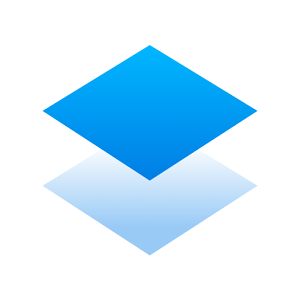

Sabéis que unos de los lugares donde habitualmente tomo notas en la nube, de tutoriales interesantes que encuentro en la red, es Paper Dropbox. Soy un amante del Software Libre, pero no hago ascos a soluciones geniales como esta, sean privativas o no.

Lo que suelo hacer es copiar el contenido de un Post y después lo pego en Paper. Además, Paper es una solución genial para tener todas esas notas sincronizadas en todos mis dispositivos.
Pero los que me seguís frecuentemente, sabéis que no me gusta depender de servicios de terceros, donde pasado un tiempo puede dar el cierre y perder todo ese contenido que tengo almacenado en ese servicio. Así que hoy os traigo un complemento genial para descargar todas las notas que tengas en Paper Dropbox y exportarlas a markdown o html.
Efenka publica en uno de sus repositorios una herramienta genial.
Vamos a clonar el repositorio y después daremos permisos de ejecución al script en python
git clone https://github.com/uGeek/dropbox-paper-backup.git
cd dropbox-paper-backup
chmod u+x dropbox-paper-backup.py
pip3 install -r requirements.txt
Ejecuta el script
./dropbox-paper-backup.py ~/carpeta_backup
Nos devolverá una url, donde podremos adquirir un token de Dropbox para poder utilizar la api.
Si guardas este token, en un futuro podrás saltarte este paso.
Comenzará la descarga de todos los documentos que tengamos en Paper Dropbox, en formato .html y .md a nuestra carpeta destino.
./dropbox-paper-backup.py --token=<TOKEN> ~/carpeta_bakup
A mi personalmente me gusta más descargarlo solo en markdown, así que utilizo el siguiente comando:
./dropbox-paper-backup.py --token=<TOKEN> -v markdown ~/carpeta_bakup
Publicado por Angel el domingo 01 septiembre del 2019
También te puede interesar:
Powered by org-bash-blog
Writing in orgmode whith emacs

Este obra está bajo una licencia de Creative Commons Reconocimiento-NoComercial-CompartirIgual 4.0 Internacional.